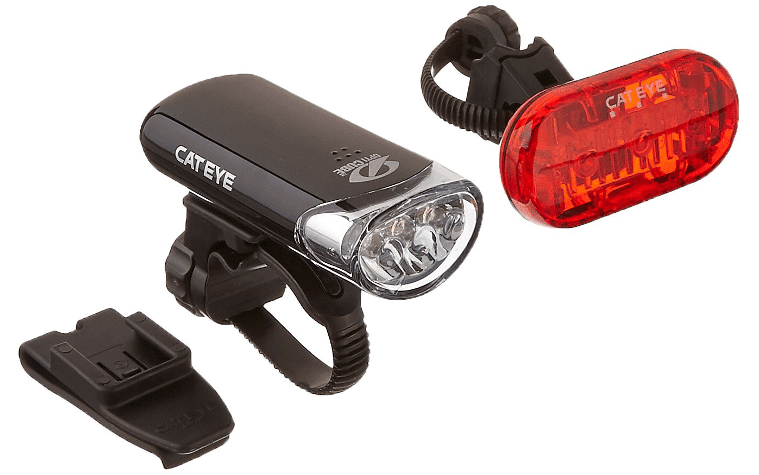
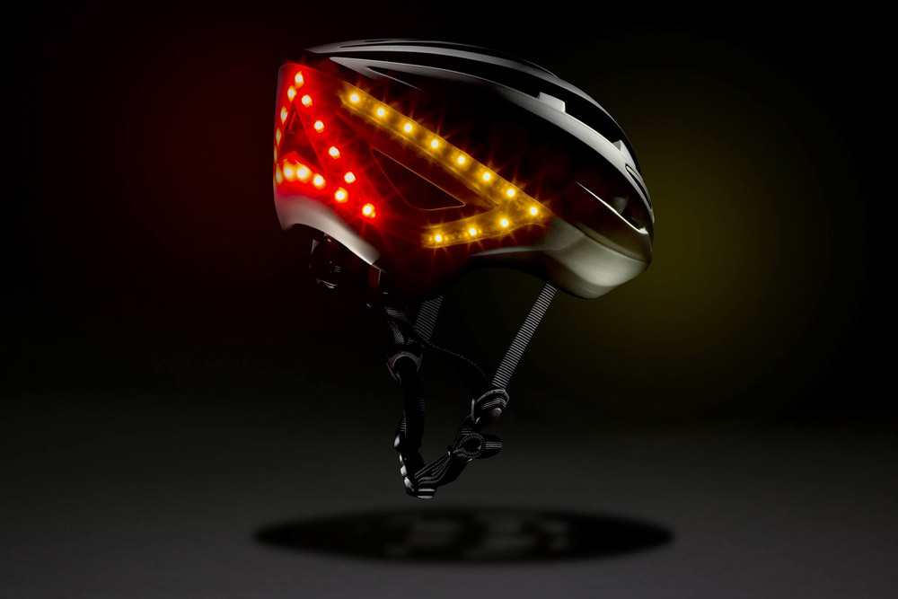
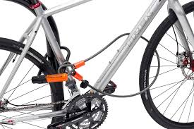

Wybrałem dla Was pięć akcesoriów rowerowych, na których moim zdaniem nie można iść po bandzie i kupować najtańszych w sklepie. Przy innych produktach jestem bardziej liberalny, sam miałem bardzo dawno temu licznik rowerowy z Allegro za 15 złotych – zepsuł się po pierwszym większym deszczu. Ale od tego czasu jestem wierny Sigmie (jeden wytrzymał 5 lat, drugi na razie mam 2 lata) i niejedno już te liczniki przeżyły. Wydaje mi się, że do pewnych wniosków trzeba dojść samemu. Że jeżeli taniutkie produkty bardzo szybko się psują, przy następnym zakupie warto zainwestować trochę więcej, by dłużej cieszyć się sprzętem. Ale na rzeczy wymienione poniżej nigdy nie warto skąpić.
1. Oświetlenie
 Gdy zbliża się wieczór i noc, oświetlenie roweru staje się obowiązkowe.
Tanie lampki nie tylko dają kiepskie światło, co wymiernie
wpływa na nasze bezpieczeństwo. Są również fatalnie wykonane, przez co nie trzymają się roweru, a w przypadku opadów deszczu, lepiej schować je do
plecaka lub wyrzucić. Konkurencję cenową wygrał chyba zestaw z Allegro za 4,80 zł. Ja tańszych nie znalazłem. Na aukcji na której je znalazłem,
zakupu dokonało 8 osób. Nie idźcie tą drogą.
Na przyzwoity zestaw, który będzie jedynie sygnalizacyjny, trzeba wydać (w cenach internetowych) około 50 złotych.
Do skromnego oświetlania drogi przed rowerem, myślę, że ta kwota wzrośnie do 80 złotych. Za takie pieniądze kupimy już nie najgorsze lampki,
zasilane paluszkami AA i AAA. I przy okazji będą odporne na wodę, a zamontowane w nich diody dadzą tyle światła, że będzie nas naprawdę widać na drodze.
2. Kask
Bardzo, bardzo gorąco namawiam do kupowania kasków w porządnych sklepach rowerowych. Nie na giełdzie i nie na podejrzanie tanich aukcjach Allegro. Kask nie musi kosztować fortuny, aby spełniał swoje zadanie. Ale kupowanie dziecku kasku za 5 (!) złotych czy sobie za 20 złotych, to proszenie się o kłopoty. Taki kask, w chwili zderzenia z ziemią, może wyrządzić więcej szkody niż pożytku. Warto wydać przynajmniej te 40-50 złotych. Warto też pamiętać, że po spotkaniu z ziemią, kask jak najbardziej może się rozlecieć na kawałki (choć w środku powinny być zatopione linki, które nie pozwolą by elementy natychmiast odleciały na bok). Nieraz słyszałem stwierdzenie „to był słaby kask, bo po upadku się rozleciał”. A tak wcale nie jest. Kask ma przyjąć na siebie energię, która zostałaby przekazana naszej głowie. I może się rozlecieć nawet na tysiąc kawałków. Byleby ochronił czaszkę.
3. Zapięcie do roweru.
W internecie krąży niezliczona ilość filmików, na których pokazane jest, w jak krótkim czasie można przeciąć dowolną linkę zabezpieczającą rower. Wystarczą do tego nożyce do cięcia i odrobina siły. Kupowanie linek, jakichkolwiek – czy z marketu za 5 złotych, czy super „grubych” z marketu sportowego za 50 złotych, nie ma większego sensu, jeśli tylko chcesz zostawić rower gdzieś na dłużej niż 5 minut. Nieraz jestem pytany, jakie zabezpieczenie kupić. I niezmiennie odpowiadam – jeśli nie chcesz stracić roweru, niech to będzie U-Lock. I to też nie najtańszy z marketu, tylko jakiś markowy: Kryptonite lub Abus. Krąży po internecie mit, jakoby na zabezpieczenie roweru należy wydać 10% jego wartości. Jest to kompletna bzdura, ale jeśli chcesz relatywnie niedrogo zabezpieczyć rower, wydaj 65-70 złotych na U-Lock Kryptonite Keeper. Będzie dużo lepiej zabezpieczony niż przez jakąkolwiek linkę.